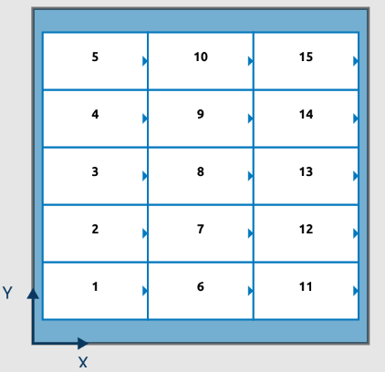
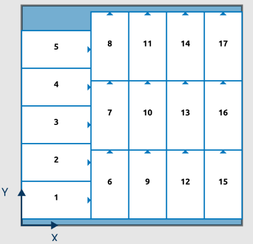
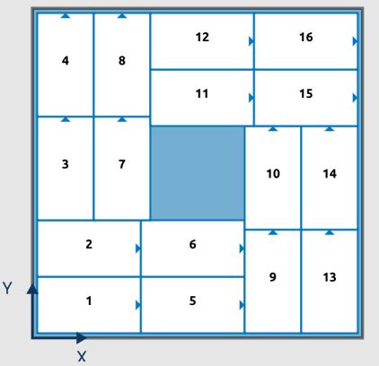
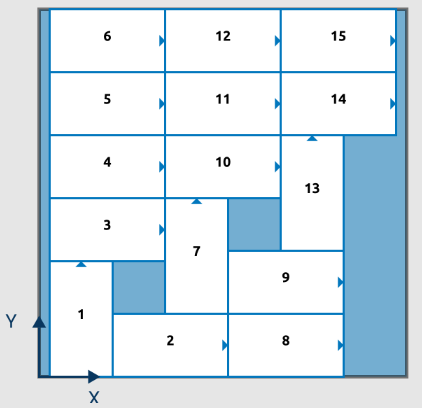
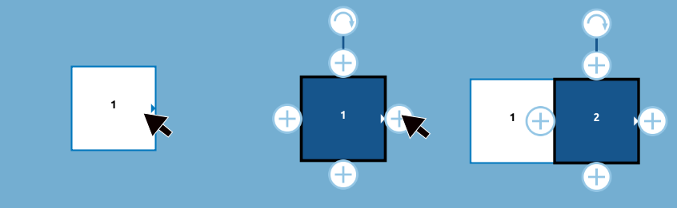
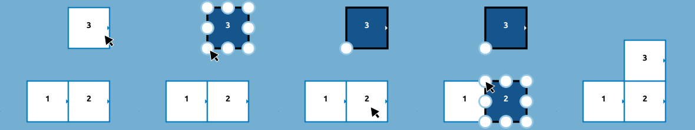

レイアウト(段)タブを使用すると、パレットの 1 つの段に箱を配置する方法を定義できます。
このインタラクティブなキャンバスには、選択したパレットを表す長方形の領域が表示されます。 製品(箱)は、割り当てられたラベルと数字が入った長方形で表されます。 製品(箱)の番号は、配置の順番を示しています。 レイアウト(段)を設定するためにロボットで教示するときは、製品(箱) 1 (最初の箱) の位置を教示します。 パレットビルダーは レイアウト(段)の製品(箱) 1 を基準にして、次の製品(箱)の位置を自動的に決定しそれに応じて経路を調整します。
パレットビルダーには 3 つのモード (ビルド、スナップ、グループ) があります。 事前定義 レイアウト ボタンは、パレットビルダーがユーザーにレイアウト(段)を提案するモードに入ります。 最後に、シーケンス ボタンを使用して、レイアウト(段)の製品(箱)を配置する順序を定義できます。
事前定義 レイアウト ボタンをクリックすると、パレットビルダー が標準のレイアウト(段)タイプを提案するプレビュー画面が表示されます。 パレットビルダー には、ドロップダウン メニューを使用して選択できる 4 つの異なるレイアウト(段)タイプがあります。 各レイアウト(段) タイプには、提案されたレイアウト(段)を調整するためのオプションがあります。
 ブロック積み: すべての製品(箱)が同じ向きになっています。
 インターロック積み: 製品(箱)の行または列は、他の製品(箱)とは向きが異なります。
 ピンホール積み: 製品(箱)の向きが交互になっているセクションを持つ対称的なレイアウト(段)です。
 ダイアゴナル積み: 向きが共通の製品(箱)が斜めに配置されます。
レイアウト(段)を受け入れると、提案されたレイアウト(段)が適用されます。 キャンセルすると、定義済みのレイアウト(段) モードに入る前にレイアウト(段) デザインが復元されます。
シーケンス ボタンを使用すると、製品(箱)の配置順序を上書きできます。 クリックすると、すべての製品(箱)に番号が表示されなくなります。 レイアウト(段)の順序付けには 2 つのオプションがあります。 自動 モードでは、パレットの角とその角に対する方向を選択する必要があります。 パレットビルダー は、選択に基づいてレイアウト(段)のシーケンスを提案します。 または、手動モードを使用している場合は、配置したい順序で製品(箱)をクリックできます。
キャンバス表示は、画面の右上隅にある 4 つのボタンを使用して操作できます。
また、パレットビルダー は、レイアウト(段)に適用できる水平方向、垂直方向の変換も可能です。
ビルド: これはレイアウト(段)のデフォルトのモードです。 製品(箱)を押すと、選択した製品(箱)に 4 つの円形の「+」ボタンが表示されます。 製品(箱)を離すと選択が解除されます。 「+」ボタンをクリックすると、選択した方向に製品(箱)が追加されます。 上部にある追加のボタンを押すと、製品(箱)をすばやく回転できます。

製品(箱)が選択されている間、下部のセクションには、パレットの座標系に対する製品(箱)の位置と方向が表示されます。 矢印ボタンを使用して、選択した製品(箱)の段階的な移動または回転を実行できます。 または、X フィールドと Y フィールドを編集して、製品(箱)の位置を設定することもできます。
グループ: グループモードでは、複数の製品(箱)を選択して移動したり、まとめて回転したりできます。 製品(箱)を押して、選択に含めるか除外します。 このモードでは、複数の製品(箱)を一度に削除することもできます。 すべて選択 ボタンを押すと、すべての製品(箱)が選択されたグループ モードが自動的に有効になります。 すべての製品(箱)を削除すると、エディタがリセットされます。

スナップ: スナップ モードでは、ユーザーは製品(箱)を一緒にすばやく移動できます。 製品(箱)をタッチすると、8 つの円形スナップ ポイントが表示されます。 ユーザーは、製品(箱)のスナップ ポイントを選択して、スナップ アクションに関連付けることができます。 次に、ユーザーは到着先の製品(箱)と対応するスナップ ポイントを選択します。 2 つの異なるスナップ ポイントが選択されると、元の製品(箱)が移動先の製品(箱)に変換されます。 選択した 2 つのスナップ ポイントが結合されます。

メモ: